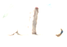
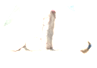
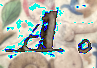
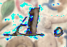
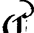
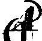
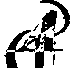
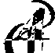

Combine
Last modified: May 17, 2022
Contents
Arithmetic
add_images
Image [GreyScale|Grey16|Float|RGB|Complex] add_images (Image [GreyScale|Grey16|Float|RGB|Complex] other, bool in_place = False)
| Operates on: | Image [GreyScale|Grey16|Float|RGB|Complex] |
|---|---|
| Returns: | Image [GreyScale|Grey16|Float|RGB|Complex] |
| Category: | Combine/Arithmetic |
| Defined in: | arithmetic.py |
| Author: | Michael Droettboom |
All images passed in (including self) must have the same pixel type.
Adds the corresponding pixels of two images together.
The two images must be the same type.
Since it would be difficult to determine what exactly to do if the images are a different size, the two images must be the same size. Use .subimage on either image to crop appropriately if necessary for your specific case.
- in_place
- If true, the operation will be performed in-place, changing the contents of the current image.
Example 1: add_images
 

divide_images
Image [GreyScale|Grey16|Float] divide_images (Image [GreyScale|Grey16|Float] other, bool in_place = False)
| Operates on: | Image [GreyScale|Grey16|Float] |
|---|---|
| Returns: | Image [GreyScale|Grey16|Float] |
| Category: | Combine/Arithmetic |
| Defined in: | arithmetic.py |
| Author: | Michael Droettboom |
All images passed in (including self) must have the same pixel type.
Divides the pixels of the current image by the pixels of another image.
The two images must be the same type.
Since it would be difficult to determine what exactly to do if the images are a different size, the two images must be the same size. Use .subimage on either image to crop appropriately if necessary for your specific case.
- in_place
- If true, the operation will be performed in-place, changing the contents of the current image.
multiply_images
Image [GreyScale|Grey16|Float|RGB|Complex] multiply_images (Image [GreyScale|Grey16|Float|RGB|Complex] other, bool in_place = False)
| Operates on: | Image [GreyScale|Grey16|Float|RGB|Complex] |
|---|---|
| Returns: | Image [GreyScale|Grey16|Float|RGB|Complex] |
| Category: | Combine/Arithmetic |
| Defined in: | arithmetic.py |
| Author: | Michael Droettboom |
All images passed in (including self) must have the same pixel type.
Multiplies the corresponding pixels of two images together.
Note that this does not work on labeled ONEBIT images, because all pixel values in the returned image are reset to one or zero in this case.
Since it would be difficult to determine what exactly to do if the images are a different size, the two images must be the same size. Use .subimage on either image to crop appropriately if necessary for your specific case.
- in_place
- If true, the operation will be performed in-place, changing the contents of the current image.
subtract_images
Image [OneBit|GreyScale|Grey16|RGB|Float|Complex] subtract_images (Image [OneBit|GreyScale|Grey16|RGB|Float|Complex] other, bool in_place = False)
| Operates on: | Image [OneBit|GreyScale|Grey16|RGB|Float|Complex] |
|---|---|
| Returns: | Image [OneBit|GreyScale|Grey16|RGB|Float|Complex] |
| Category: | Combine/Arithmetic |
| Defined in: | arithmetic.py |
| Author: | Michael Droettboom |
All images passed in (including self) must have the same pixel type.
Adds the pixels of another image from the current image.
The two images must be the same type.
Since it would be difficult to determine what exactly to do if the images are a different size, the two images must be the same size. Use .subimage on either image to crop appropriately if necessary for your specific case.
- in_place
- If true, the operation will be performed in-place, changing the contents of the current image.
Example 1: subtract_images

 

Logical
and_image
Image [OneBit] and_image (Image [OneBit] other, bool in_place = False)
| Operates on: | Image [OneBit] |
|---|---|
| Returns: | Image [OneBit] |
| Category: | Combine/Logical |
| Defined in: | logical.py |
| Author: | Michael Droettboom |
Perform the AND operation on two images.
Since it would be difficult to determine what exactly to do if the images are a different size, the two images must be the same size.
- in_place
- If true, the operation will be performed in-place, changing the contents of the current image.
See or_image for some usage examples.
Example 1: and_image


or_image
Image [OneBit] or_image (Image [OneBit] other, bool in_place = False)
| Operates on: | Image [OneBit] |
|---|---|
| Returns: | Image [OneBit] |
| Category: | Combine/Logical |
| Defined in: | logical.py |
| Author: | Michael Droettboom |
Perform the OR operation on two images.
Since it would be difficult to determine what exactly to do if the images are a different size, the two images must be the same size.
- in_place
- If true, the operation will be performed in-place, changing the contents of the current image.
Usage examples:
Using logical functions in different ways will generally involve creating temporary subimages for regions of interest. Subimages are very lightweight objects that keep track of a bounding box and refer to the underlying data, therefore creating/destroying a number of these on the fly should not have a significant impact on performance.
Padding an image.
def pad_image(image, padding):
new_image = Image(0, 0,
image.nrows + padding * 2, image.ncols + padding * 2,
ONEBIT, DENSE)
new_image.subimage((padding, padding), Dim(image.nrows, image.ncols)).or_image(image, True)
return new_image
Stamping an image over a larger image. Use subimage to change the destination of the stamp.
# stamp: a small stamp image
# paper: a larger destination image
for x in range(0, 100, 10):
paper.subimage(0, x, stamp.nrows, stamp.ncols).or_image(stamp, True)
Putting part of a source image on the upper-left corner of a destination image.
# src: a source image
# dest: a destination image
dest.or_image(src.subimage(50, 50, 25, 25), True)
Removing a connected component from its original image.
# src: the original image
# cc: a cc on that image
src.clip_image(cc).xor_image(cc, True)
Example 1: or_image
 
xor_image
Image [OneBit] xor_image (Image [OneBit] other, bool in_place = False)
| Operates on: | Image [OneBit] |
|---|---|
| Returns: | Image [OneBit] |
| Category: | Combine/Logical |
| Defined in: | logical.py |
| Author: | Michael Droettboom |
Perform the XOR operation on two images.
Since it would be difficult to determine what exactly to do if the images are a different size, the two images must be the same size.
- in_place
- If true, the operation will be performed in-place, changing the contents of the current image.
See or_image for some usage examples.
Example 1: xor_image

 

diff_images
Image [RGB] diff_images (Image [OneBit] other)
| Operates on: | Image [OneBit] |
|---|---|
| Returns: | Image [RGB] |
| Category: | Combine |
| Defined in: | image_utilities.py |
| Author: | Michael Droettboom and Karl MacMillan |
Returns a color image representing the difference of two images following the conventions of a number of Unix diff visualization tools, such as CVS web. Pixels in both images are black. Pixels in 'self' but not in the given image ("deleted" pixels) are red. Pixels in the given image but not in self ("inserted" pixels) are green.
mask
Image [GreyScale|RGB] mask (Image [OneBit] mask)
| Operates on: | Image [GreyScale|RGB] |
|---|---|
| Returns: | Image [GreyScale|RGB] |
| Category: | Combine |
| Defined in: | image_utilities.py |
| Author: | Michael Droettboom and Karl MacMillan |
Masks an image using the given ONEBIT image. Parts of the ONEBIT image that are white will be changed to white in the resulting image.
The images must be the same size.
union_images
Image [OneBit] union_images ([object list_of_images])
| Returns: | Image [OneBit] |
|---|---|
| Category: | Combine |
| Defined in: | image_utilities.py |
| Author: | Michael Droettboom and Karl MacMillan |
Returns an image that is the union of the given list of connected components.